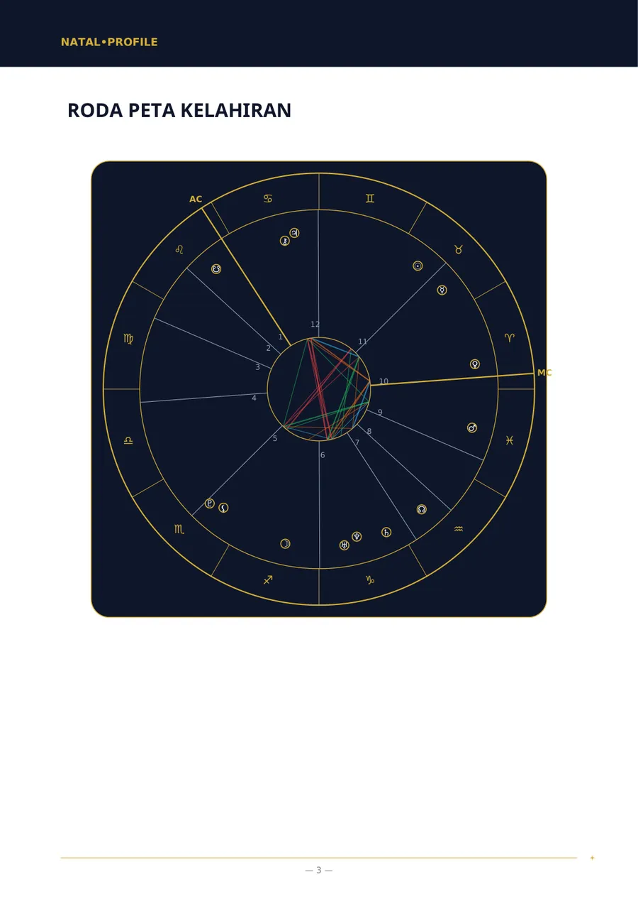
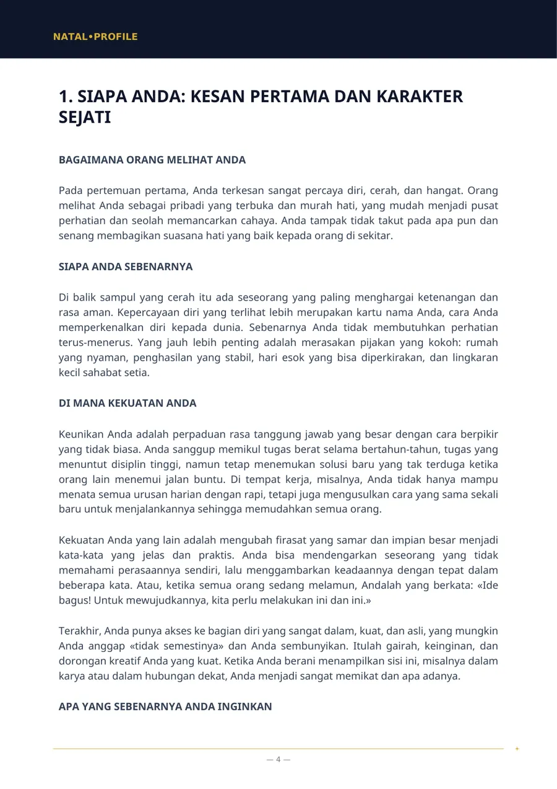
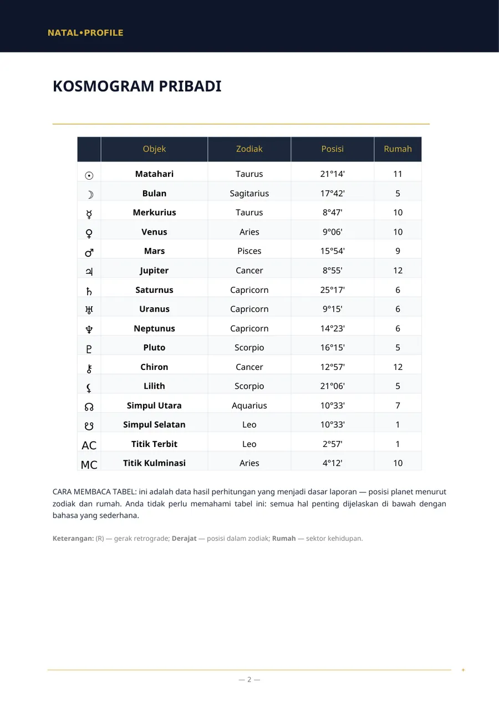
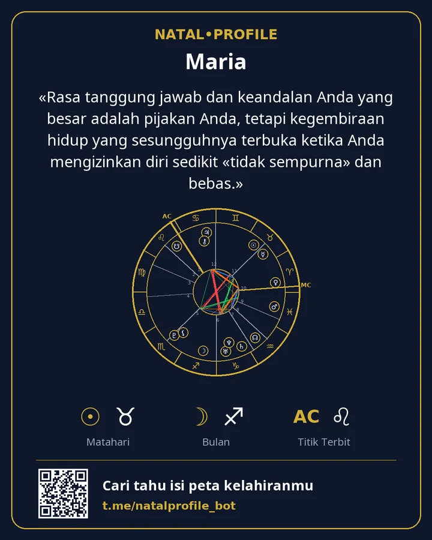

Peta kelahiran Anda, dijelaskan dengan bahasa sederhana
Masukkan tanggal, jam, dan kota kelahiran, lalu terima PDF dalam beberapa menit: seperti apa karakter Anda, di mana kekuatan Anda, apa yang menghambat, dan dari mana memulai. Tanpa istilah rumit dan tanpa kalimat umum tentang zodiak.
- Dihitung dengan Swiss Ephemeris
- 15 bahasa
- Tanpa langganan
Dua perhitungan cepat
Dijalankan di browser Anda. Tidak ada yang dikirim atau disimpan.
Tanda Matahari dan elemen
Uraikan seluruh peta →Tanda Matahari hanyalah satu dari puluhan titik dalam peta. Laporan memperhitungkan semua planet, rumah, dan hubungan di antaranya.
Angka jalan hidup
Dapatkan analisis numerologi →Dihitung dengan cara yang sama seperti di laporan bot: digit tanggal dijumlahkan sampai tersisa satu digit. Angka nama dihitung di bot.
Seperti apa laporannya
Halaman asli laporan «Peta kelahiran». Ini contoh: data kelahirannya fiktif.




«Rasa tanggung jawab dan keandalan Anda yang besar adalah pijakan Anda, tetapi kegembiraan hidup yang sesungguhnya terbuka ketika Anda mengizinkan diri sedikit «tidak sempurna» dan bebas.»
Apa yang bisa dipesan
Daftar bab di halaman laporan sama dengan yang Anda terima di PDF. Harga dalam Telegram Stars.
Peta Kelahiran (Analisis Lengkap)
Analisis lengkap karakter Anda dari tanggal, jam, dan tempat lahir.
Peta Kelahiran (Analisis Dasar)
Analisis karakter ketika jam lahir tidak diketahui.
Analisis Kecocokan (Lengkap)
Dua orang: apa yang membuat kalian tertarik, di mana kalian berbeda pendapat, dan apa yang kalian berikan satu sama lain.
Analisis Kecocokan (Dasar)
Kecocokan karakter ketika jam lahir tidak diketahui.
Analisis Karier dan Keuangan
Kekuatan Anda dalam pekerjaan, pekerjaan yang cocok, dan cara Anda mengelola uang.
Peta Anak — panduan buat memahami buah hatimu
Apa yang dibutuhkan anak Anda agar merasa tenang dan di mana perlu didukung.
Ramalan Tahunan (Solar Return)
Tema tahun Anda dari ulang tahun ke ulang tahun, dengan periode bertanggal.
Ramalan Harian
Prakiraan untuk hari ini berdasarkan waktu persis aspek Bulan.
Numerologi berdasarkan Nama dan Tanggal Lahir
Angka-angka dari nama dan tanggal lahir Anda menurut sistem Pythagoras.
Peta Weda (Jyotish)
Peta Weda: lagna, graha, nakshatra, dan periode dasha.
Cara kerjanya
Dari pesan pertama hingga berkas siap dalam beberapa menit.
Buka bot
Di Telegram, tanpa pendaftaran dan kata sandi.
Masukkan data
Nama, tanggal, jam, dan kota kelahiran. Kota dipilih dari daftar.
Terima PDF
Biasanya dalam 5 menit. Berkas dikirim langsung ke chat.
Simpan kartunya
Gambar berisi peta Anda dan kalimat kunci dari laporan.
Pembayaran
Laporan dibayar dengan Telegram Stars langsung di chat dengan bot. Tidak ada langganan — Anda membayar sekali per laporan.
Bab pertama analisis kelahiran beserta peta Anda dan horoskop harian — masing-masing satu kali tanpa biaya.
Anda membayar satu laporan dan mendapat tautan. Teman Anda membukanya, mengisi datanya sendiri, dan menerima analisisnya.
Di bot ada bantuan «Tidak bisa membayar?», dan dukungan menjawab di Telegram.
Data Anda
Tanggal, jam, dan tempat lahir hanya diperlukan untuk menghitung peta dan menulis laporan.
Setelah PDF dikirim, nama, tanggal, jam, dan tempat lahir dihapus.
PDF berada di server selama 24 jam lalu dihapus. Anda tetap memilikinya di chat.
Kalkulator berjalan di browser Anda. Situs ini tidak memiliki formulir, pendaftaran, atau pelacak.
Pertanyaan yang sering diajukan
Saya tidak tahu jam lahir saya. Bagaimana?
Pilih laporan «tanpa jam lahir». Rumah dan ascendant tidak disertakan, tetapi karakter, perasaan, cara berpikir, dan hubungan tetap diuraikan.
Apa bedanya dengan horoskop zodiak?
Horoskop zodiak hanya memakai posisi Matahari. Laporan menghitung semua planet, rumah, dan hubungan di antaranya untuk tanggal, jam, dan tempat lahir Anda.
Siapa yang menulis teks laporan?
Posisi planet dihitung oleh perangkat lunak dengan Swiss Ephemeris. Lalu model bahasa menulis teks dari perhitungan itu berdasarkan aturan tetap.
Laporan tersedia dalam bahasa apa?
Lima belas: Inggris, Rusia, Spanyol, Hindi, Portugis, Vietnam, Turki, Indonesia, Uzbek, Kazakh, Prancis, Jerman, Italia, Arab, dan Persia.
Apakah uang bisa dikembalikan?
Laporan dibuat khusus untuk Anda, jadi pembayaran tidak dikembalikan setelah PDF dikirim. Jika laporan gagal dibuat karena kesalahan kami, dana dikembalikan sepenuhnya.
Mulai dari bab gratis
Kami menghitung peta Anda dan mengirim bab pertama dari analisis yang sebenarnya. Jika suka, ambil yang lengkap.